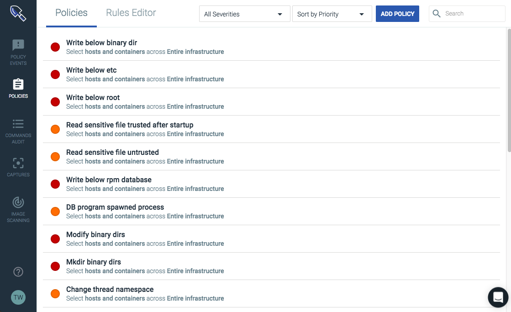

Getting Started
Contents
Access the Sysdig Secure Interface
To access the Sysdig Secure interface, the Sysdig agent must be installed, and a core admin user must be created during the Welcome Wizard. For installation instructions, refer to the Agent Installation documentation.
Once the installation process is complete, the Sysdig Secure interface will be available: https://secure.sysdig.com.
Note
Subsequent users must also have user credentials defined, either through Sysdig Secure, or through an integrated authentication tool. For more information on user creation, refer to the User and Team Administration documentation.
The Sysdig Secure Interface
The Sysdig Secure UI is comprised of five main modules:
Each module comprises a subset of the Sysdig Secure functionality, and can be navigated between using the side bar.
|  |
For more information on each of the modules, refer to the relevant module documentation.
Next Steps
There are a couple of potential starting points, depending on preferred workflow, and whether the Sysdig Secure implementation, or the user, is new:
For new Sysdig Secure environments, navigate to the Policies module to start configuring the policies and rules required for the environment.
Note
For a policy creation walkthrough, refer to the Policy Creation Walkthrough documentation.
For new Sysdig Secure users, navigate to the Policy Events module to review the current state of the environment.